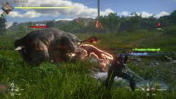
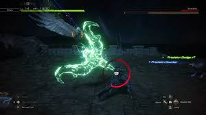

Final Fantasy XVI es un videojuego de rol (RPG) desarrollado y publicado por Square Enix. Es la decimosexta entrega principal de la famosa serie de videojuegos Final Fantasy y fue lanzado en junio de 2023 para PlayStation 5. A diferencia de los titulos anteriores de la saga, que tienen un enfoque en mundos de fantasma medieval con elementos de tecnologia avanzada, Final Fantasy XVI se adentra en una tematica mas oscura y madura, centrandose en el conflicto entre poderosos reinos y las Eikons (unidades de invocacion poderosas), una tradicion de la serie que ha sido central en varias entregas pasadas.
¿De que trata Final Fantasy XVI?
La historia de Final Fantasy XVI esta ambientada en el mundo de Valisthea, un continente dividido en varios reinos que se ven afectados por la escasez de recursos de Cristales Madre (que dan vida y poder a los reinos). Estos cristales son esenciales para la magia y el bienestar de las naciones, pero la lucha por su control ha generado grandes conflictos.
El protagonista es Clive Rosfield, el primogenito del Reino de Rosaria, quien se ve envuelto en una tragedia personal que transforma su vida por completo. A lo largo de la historia, Clive busca venganza y justicia por las perdidas que ha sufrido, mientras explora la compleja politica de los reinos, la relacion con las criaturas divinas llamadas Eikons (o Invocaciones en otros titulos de la saga), y los Dominantes, individuos que tienen la habilidad de transformarse en estas criaturas para luchar en nombre de los reinos.
 